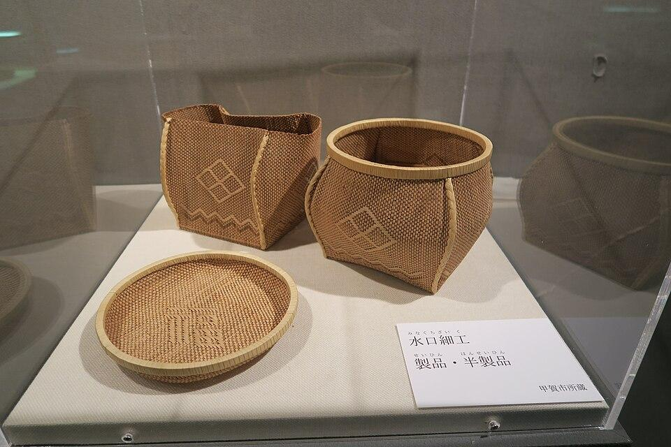

What is it?
This is a lost and revived craft. Minakuchi-zaiku are light, finely woven baskets from Minakuchi in Kōka City, Shiga.
They are woven from the vines of a plant called tsuzurafuji. (Google Arts & Culture, n.d.)
History
In the Meiji period (1868–1912) Japan opened up to the world, and the baskets travelled overseas. They were shown at the Vienna World Exposition and ordered by rich customers abroad.
Production ended in 1970. By 2000, local people wanted the craft back. They studied old baskets and spoke to makers’ families, and after almost ten years of work they succeeded. (Google Arts & Culture, n.d.)
Why is it endangered?
The makers were paid too little for the time and effort the baskets needed, so the craft stopped. (Google Arts & Culture, n.d.)
Its return shows that a craft can come back if people support it.
How you can help
- Pay a fair price for handmade work. Low pay is what ended this craft.
- See the baskets in a local museum in Minakuchi.
- Ask older relatives about skills that could be remembered and shared.
Quick facts
- Made in Minakuchi, Shiga
- Production ended in 1970
- People were working to revive it by 2000
- Revival took almost ten years
Sources
- Rediscovering the Lost Crafts of Japan, Google Arts & Culture, n.d.
- Gifu Japanese Umbrellas, Kogei Japan, n.d.